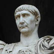
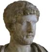

Dos emperadores de origen hispánico: Trajano y Adriano
Marcus Ulpius Nerva Traianus, conocido como Trajano, es el emperador que presidió sobre Roma en el momento de su mayor extensión geográfica. De una prominente familia romana que se estableció en la Hispania Baetica, nació en Itálica en el año 53 d.C. El emperador Nerva lo adoptó y lo nombró sucesor para granjearse el favor del ejército, con quien Trajano era popular. Murió en el año 117 tras una difícil campaña en los territorios más orientales del Imperio. |
 |
Publius Aelius Traianus Hadrianus, o Adriano en español, fue el hijo adoptivo de Trajano (aunque sus enemigos alegaron que ese nombramiento fue un subterfugio de la esposa de Trajano, partidaria de Adriano) y le sucedió en 117. Adriano es conocido sobre todo por gobernar durante un período mayormente pacífico. Nació, como Trajano, en Itálica, en el año 76. Consolidó y fortificó las fronteras del imperio y ordenó extensas edificaciones monumentales y urbanas, tanto en Italia como en otros lugares del imperio, como Hispania y Grecia. Fue gran helenófilo y su actitud refleja el prestigio que las letras y artes griegas tenían para la sociedad romana. Murió en el año 138. |
 |
{kind=link}
{kind=link}